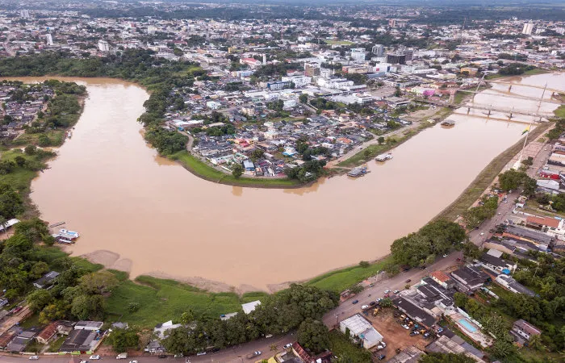

O Acre é um estado localizado na Região Norte do Brasil, conhecido por sua floresta amazônica, rios e rica cultura indígena. Sua economia é baseada na agricultura, na pecuária e na exploração de recursos naturais. O atual governador do Acre é Gladson Cameli, que atua na administração do estado, promovendo políticas de desenvolvimento e preservação ambiental.
